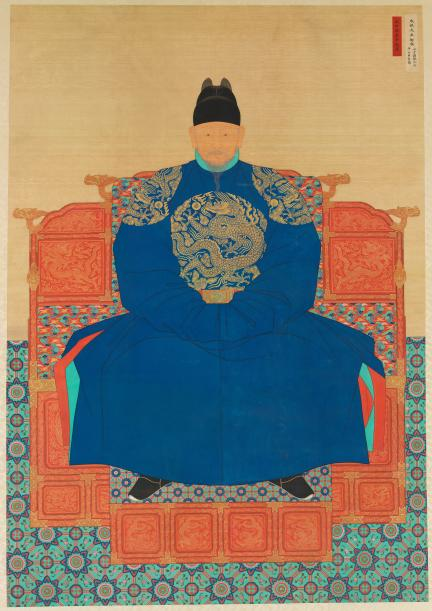

태조 이성계
"고려의 무장에서 조선의 창업주로, 새로운 시대를 열다."

- 본관: 전주 (全州)
- 이름: 이단 (李旦) / (등극 전 이름: 이성계)
- 묘호/시호: 태조 (太祖) / 고황제 (고종 대 추존)
- 재위 기간: 1392년 ~ 1398년
- 대표 업적
- 조선 왕조 개창 및 조선 건국 (1392년)
- 개경에서 한양(서울)으로의 한양 천도
- 한양 도성 및 경복궁, 종묘 사직 축조
1. 출생과 성장 (동북면의 실력자)
- 출생: 1335년 화령부(현재의 함경남도 영흥)에서 이자춘의 둘째 아들로 탄생.
- 가문의 기반: 아버지 이자춘이 공민왕의 쌍성총관부 탈환 작전(1356년)에 내응하여 공을 세우며 동북면(함경도 일대)의 강력한 군사 실력자로 부상.
- 무장으로서의 명성: 어릴 때부터 활솜씨가 뛰어났으며, 공민왕 대에 홍건적 침입(개성 탈환), 원나라 나하추 격퇴, 요동 덕흥군 군대 섬멸 등 위기 때마다 나라를 구하며 최영과 함께 고려 최고의 무장으로 성장함.
2. 권력 장악과 조선 건국
- 황산대첩 (1380년): 남원 황산에서 아기발도가 이끄는 대규모 왜구 군대를 전멸시키며 온 백성의 영웅이 됨.
- 위화도 회군 (1388년): 우왕과 최영의 요동 정벌 명령에 반대하며 '사불가론(四不可論)'을 제기했으나 묵살당함. 압록강 위화도에서 군사를 돌려 개성을 점령하고 최영과 우왕을 제거하여 정치·군사적 실권을 장악함.
- 조선 건국 (1392년): 신흥 사대부(정도전, 조준 등)와 손을 잡고 사전(사유지) 혁파 등 개혁을 단행. 반대파인 정몽주가 아들 이방원에 의해 제거된 후, 1392년 7월 17일 수창궁에서 왕위에 오름.
- 국호 제정: 명나라의 재가를 받아 새 나라의 이름을 '조선(朝鮮)'으로 확정(1393년).
3. 주요 업적 (새 국가의 기틀 마련)
- 한양 천도 (1394년): 고려의 구세력을 벗어나기 위해 새 수도를 '한양'으로 결정하고 천도함.
- 한양 도성 및 궁궐 축조: 신도궁궐조성도감을 설치하여 경복궁(강녕전, 사정전, 근정전 등)과 종묘·사직을 준공하고, 4대문(숭례문, 흥인문 등)과 4소문을 포함한 도성을 쌓음.
- 법제 및 국가 시스템 정비: 정도전의 《조선경국전》, 《경제문감》 및 최초의 성문 법전인 《경제육전》을 간행하여 유교적 법치 국가의 기틀을 다짐
4. 말년과 비극 (왕자의 난과 함흥차사)
- 제1차 왕자의 난 (1398년): 신덕왕후 강씨의 막내아들 '방석'을 세자로 책봉하자, 이에 반발한 다섯째 아들 이방원이 정도전, 남은 등을 살해하고 세자 방석·방번을 죽이는 비극이 발생.
- 함흥차사 설화: 태종(이방원)이 즉위한 후 둘의 관계가 악화되어 태조는 함주(함흥), 소요산 등에 머무름. 태종이 안부를 묻기 위해 보낸 사신들을 죽이거나 가두어 돌아오지 못하게 했다는 '함흥차사' 이야기가 전해질 정도로 깊은 갈등을 겪음.
- 최후: 1402년 한양으로 돌아왔으며, 1408년 5월 24일 창덕궁에서 승하함. 현재 경기도 구리시의 건원릉에 안장됨.